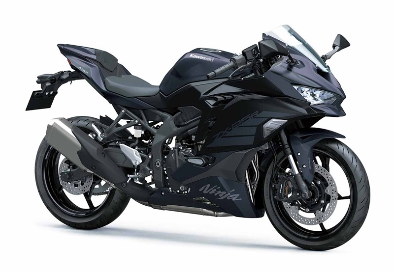
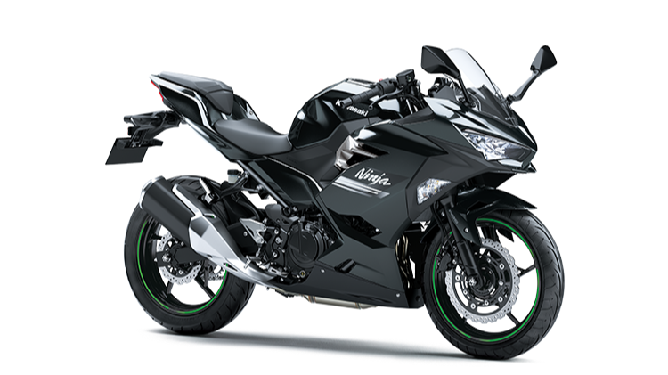
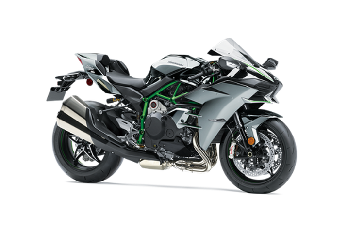

Daftar Motor Sport
-

Kawasaki zx25r
Harga: Rp 100.000.000
Kawasaki Ninja ZX-25R tersedia dalam pilihan mesin Petrol di Indonesia Sport baru dari Kawasaki hadir dalam 2 varian. Bicara soal spesifikasi mesin Kawasaki Ninja ZX-25R, ini ditenagai dua pilihan mesin Petrol berkapasitas 249.8 cc. Ninja ZX-25R tersedia dengan transmisi Manual tergantung variannya. Ninja ZX-25R adalah Sport 2 seater dengan panjang 1980 mm, lebar 750 mm, wheelbase 1380 mm. serta ground clearance 125 mm. -

Harley Davidson
Harga: Rp 25.000.000
Kawasaki Ninja 250 tersedia dalam pilihan mesin Petrol di Indonesia Sport baru dari Kawasaki hadir dalam 2 varian. Bicara soal spesifikasi mesin Kawasaki Ninja 250, ini ditenagai dua pilihan mesin Petrol berkapasitas 249 cc. Ninja 250 tersedia dengan transmisi Manual tergantung variannya. Ninja 250 adalah Sport 2 seater dengan panjang 1990 mm, lebar 710 mm, wheelbase 1370 mm. serta ground clearance 145 mm. -

Ninja H2
Harga: Rp 30.000.000
Kawasaki Ninja H2 tersedia dalam pilihan mesin Petrol di Indonesia Super Sport baru dari Kawasaki hadir dalam 1 varian. Bicara soal spesifikasi mesin Kawasaki Ninja H2, ini ditenagai dua pilihan mesin Petrol berkapasitas 998 cc. Ninja H2 tersedia dengan transmisi Manual tergantung variannya. Ninja H2 adalah Super Sport 1 seater dengan panjang 2085 mm, lebar 770 mm, wheelbase 1455 mm. serta ground clearance 130 mm.